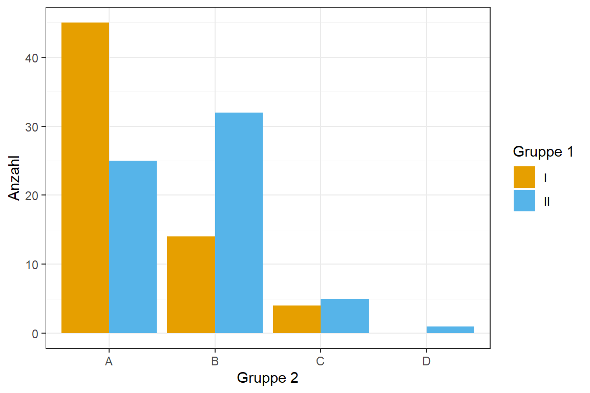

pacman::p_load(tidyverse, magrittr, effectsize, see)2 Analyse von Anzahlen in zwei Gruppen
Version vom January 13, 2024 um 16:39:11
Wir wollen folgende R Pakete in diesem Kapitel nutzen.
In dieser sehr simplen Analyse haben wir zwei Gruppen vorliegen. Die Gruppe 1 ist hat zwei Level oder Behandlungen abgekürzt mit I und II. Die Gruppe 2 hat insgesamt vier Level oder eben Behandlungen, die wir mit A, B, C und D bezeichnen. Wir haben jetzt für die jeweiligen Kombinationen auf dem Feld etwas gezählt. Wir haben also für jede dieser Kombinationen nur eine Zahl. Es ergbit sich somit die folgende Matrix an Zahlen.
rel_mat <- matrix(c(45, 14, 4, 0,
25, 32, 5, 1), nrow = 2, byrow = TRUE,
dimnames = list(c("I", "II"), c("A", "B", "C", "D")))
rel_mat A B C D
I 45 14 4 0
II 25 32 5 1Nun können wir den \(\mathcal{X}^2\)-Test nutzen, um zu testen, ob die Zahlen in der Matrix bzw. auf unseren Feld gelcihverteilt sind. Die Nullhypothese lautet, dass es keinen Zusammenhang zwischen der Gruppe 1 und der Gruppe 2 auf dem Feld gibt. Die Zahlen sind also rein zufällig in dieser Anordnung.
chisq.test(rel_mat)
Pearson's Chi-squared test
data: rel_mat
X-squared = 13.869, df = 3, p-value = 0.003089Wir erhalten einen sehr kleinen \(p\)-Wert mit \(0.003\). Wir können daher die Nullhypothese ablehnen, da der \(p\)-Wert kleiner ist als das Signifikanzniveau \(\alpha\) mit 5%. Wir haben ein signifikantes Ergebnis. Wir können von einen Zusamenhang zwischen den beiden Gruppen ausgehen.
Mit Cramers V können wir auch noch die Effektstärke für einen \(\mathcal{X}^2\)-Test berechnen.
cramers_v(rel_mat) Cramer's V (adj.) | 95% CI
--------------------------------
0.29 | [0.00, 1.00]
- One-sided CIs: upper bound fixed at [1.00].Der Effekt ist mit \(0.33\) nicht besonders stark. Du kannst Cramers V wie die Korrelation interpretieren. Ein V von 0 bedeutet keinen Zusammenhang und ein V von 1 einen maximalen Zusammenhang. Wir wollen uns die Daten dann nochmal in einer Abbidlung anschauen. Dafür müssen wir die Matrix erstmal in einen Datensatz umwandeln und die Gruppen zu Faktoren machen.
plot_tbl <- rel_mat %>%
as_tibble(rownames = "group1") %>%
gather(A:D, key = "group2", value = "value") %>%
mutate(group1 = as_factor(group1),
group2 = as_factor(group2))In Abbildung 2.1 sehen wir die Matrix der Zähldaten für die beiden Gruppen nochmal visualisiert. Beim betrachten fällt auf, dass die beiden Level C und D kaum Zähldaten enthalten. Hier wäre zu überlegen die beiden Level aus der Analyse herauszunehmen und einen klassischen \(\mathcal{X}^2\)-Test auf einer 2x2 Kreuztabelle zu rechnen.
ggplot(plot_tbl, aes(x = group2, y = value, fill = group1)) +
theme_bw() +
geom_bar(stat = "identity", position = position_dodge()) +
labs(x = "Gruppe 2", y = "Anzahl", fill = "Gruppe 1") +
scale_fill_okabeito() 